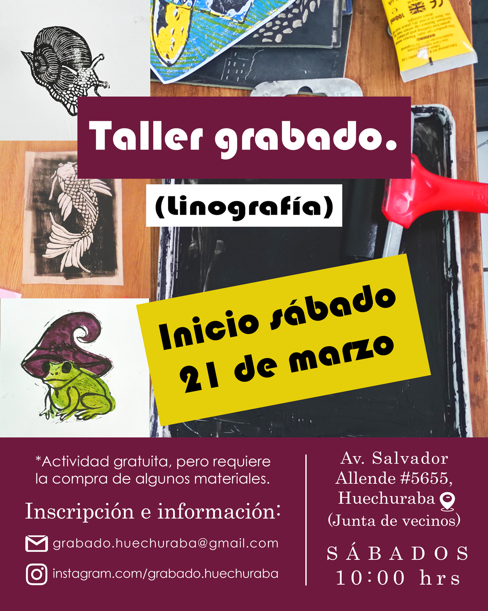

¡Bienvenidxs!
En esta página podrás encontrar la información necesaria de nuestro taller de grabado.

Sobre nosotros
Este taller nace a principios del año 2025 como una iniciativa local autogestionada para crear y promover un espacio artístico en torno al grabado (linografía), y está formado principalmente (pero no de forma exclusiva) por vecinos de la comuna de Huechuraba.
Contacto
Correo: grabado.huechuraba@gmail.com
Instagram: @grabado.huechuraba
Sobre la linografía
La linografía es una técnica de grabado en relieve en la que se confecciona una matriz tallando un diseño sobre una placa de linóleo. Las partes que se eliminan con las gubias no quedan impresas, mientras que la parte no intervenida es la que se entinta, por lo que se puede considerar que se trabaja en "negativo". Una vez terminada la matriz, se le aplica tinta con un rodillo, y mediante presión se transfiere la image a una superficie (generalmente papel o tela) Es idéntica a la xilografía, únicamente cambia el soporte de la matriz, en linografía es linóleo y en xilografía, madera.